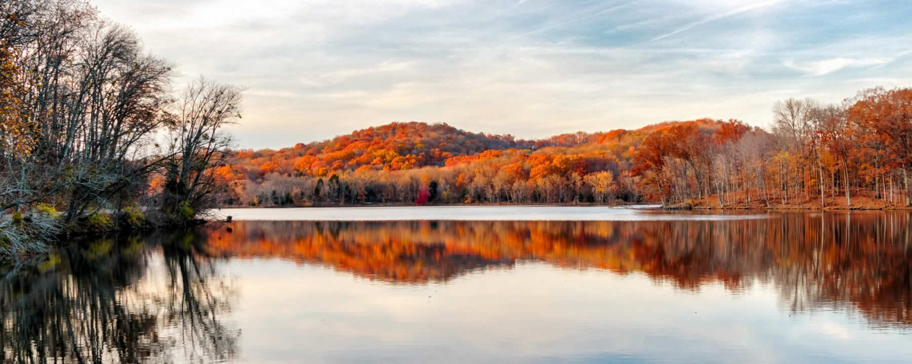
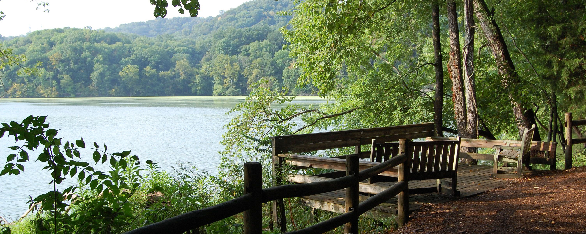
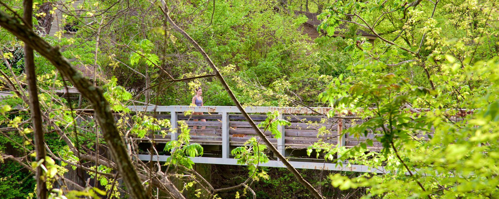

Radnor Lake





Radnor Lake Park is a 1.332 acre park which is unique for its amount of wildlife and its location. Radnor Lake Park is located in the urban city of Nashville, Tennessee. Radnor Lake hosts many activities and educational events such as canoeing and ranger led informational events. Radnor Lake is a perfect place for bird watching and observing wildlife both in the lake and in the greenery. The Radnor Lake Park Center features a small museum in which the history of the park is recorded along with artifacts from the area and park.
Phone Number
615-373-3467
Adress
Radnor Lake State Park
1160 Otter Creek Road
Nashville, Tennessee 37220
Park Hours
6AM to sunset daily/h11>
Visitor Center
9:30AM to 6:00PM thursday through monday
Closed from 1:00PM to 2:00